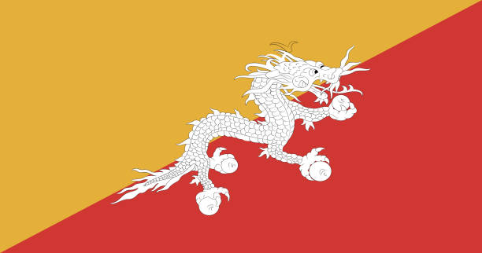

Sobre o Butão
O Butão é um reino budista localizado no sudeste da Ásia. Possui uma população de cerca de 800 mil habitantes e tem como capital a cidade de Thimphu. O país é conhecido por sua política de Felicidade Interna Bruta, que valoriza o bem-estar da população acima do crescimento econômico.
Ao contrário da maioria dos países, o Butão prioriza a preservação do meio ambiente e da cultura. Mais de 70% de seu território é coberto por florestas, e a constituição exige que pelo menos 60% das florestas sejam preservadas para sempre.
O turismo é controlado e visa a qualidade, não a quantidade. Isso garante uma experiência autêntica aos visitantes e protege a identidade nacional.
